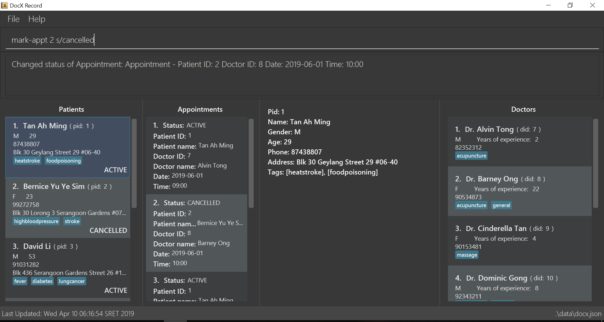

By: W13-1 and Team SE-EDU Since: Jun 2016 Licence: MIT
- 1. Introduction
- 2. Quick Start
- 3. Features
- 3.1. Viewing help :
help - 3.2. Adding a patient:
add-p - 3.3. Listing all patients :
list-p - 3.4. Editing a patient :
edit-p - 3.5. Search patient by name:
search-p - 3.6. Search patient by pid:
search-pid - 3.7. Search patient by tags:
search-p-tag - 3.8. Search patient by appt status:
search-p-status - 3.9. Advanced search patient by any info:
search-p-advanced - 3.10. Selecting an existing patient :
select-p - 3.11. Deleting an existing patient :
delete-p - 3.12. Listing all doctors :
list-doctor - 3.13. Selecting a doctor :
select-doctor - 3.14. Editing a doctor :
edit-doctor - 3.15. Locating doctor by name:
search-doctor - 3.16. Locating doctor by specialisation:
search-spec - 3.17. Deleting an existing doctor :
delete-doctor - 3.18. Finding a doctor for appointment :
match-doctor - 3.19. Adding a medical history:
add-med-hist - 3.20. Listing medical histories:
list-med-hist - 3.21. Editing write up of medical history:
edit-med-hist - 3.22. Sorting medical history by date:
sort-med-hist - 3.23. Searching medical history :
search-med-hist - 3.24. Viewing a certain medical history:
select-med-hist - 3.25. Adding an appointment:
add-appt - 3.26. Listing of appointments :
list-appt - 3.27. Completing an appointment :
complete-appt - 3.28. Cancelling an appointment :
cancel-appt - 3.29. Listing appointments of a doctor :
list-appt - 3.30. Listing available timings of a doctor :
list-doc-time - 3.31. Listing available timings of all doctors :
list-time - 3.32. Adding a medicine:
add-med - 3.33. Listing all medicines :
list-med - 3.34. Adding a prescription:
add-presc - 3.35. Listing all prescriptions of a patient :
list-presc - 3.36. Viewing a prescription of a patient:
view-presc - 3.37. Locating prescription :
search-presc - 3.38. Listing entered commands :
history - 3.39. Clearing all entries :
clear - 3.40. Exiting the program :
exit - 3.41. Saving the data
- 3.42. Encrypting data files
[coming in v2.0]
- 3.1. Viewing help :
- 4. FAQ
- 5. Command Summary
1. Introduction
docX is for those who prefer to use a desktop app for managing contacts. More importantly, docX is optimized for those who prefer to work with a Command Line Interface (CLI) while still having the benefits of a Graphical User Interface (GUI). If you can type fast, docX can get your contact management tasks done faster than traditional GUI apps. Interested? Jump to the Section 2, “Quick Start” to get started. Enjoy!
2. Quick Start
-
Ensure you have Java version
9or later installed in your Computer. -
Download the latest
docX.jarhere. -
Copy the file to the folder you want to use as the home folder for your docX.
-
Double-click the file to start the app. The GUI should appear in a few seconds.
 -
Type the command in the command box and press Enter to execute it.
e.g. typinghelpand pressing Enter will open the help window. -
Some example commands you can try:
-
add-patient` n/John Doe p/98765432 a/22 g/M adr/Utown College : adds a patient namedJohn Doeto docX. -
delete-doctor3: deletes the 3rd doctor shown in the current list -
*
list-med-hist: lists all medical histories -
add-med-hist` pid/2 did/8 d/2018-12-09 sw/The patient had a cough. I told him to have a good rest : adds a medical history of patient with specified id(pid) and doctor with specified id(did). -
exit: exits the app
-
-
Refer to Section 3, “Features” for details of each command.
3. Features
Command Format
-
Words in
UPPER_CASEare the parameters to be supplied by the user e.g. inadd n/NAME,NAMEis a parameter which can be used asadd n/John Doe. -
Items in square brackets are optional e.g
n/NAME [t/TAG]can be used asn/John Doe t/friendor asn/John Doe. -
Items with
… after them can be used multiple times including zero times e.g.[s/SPECIALISATION]…can be used ass/acupuncture,s/acupuncture s/generaletc. -
Parameters can be in any order e.g. if the command specifies
n/NAME p/PHONE_NUMBER,p/PHONE_NUMBER n/NAMEis also acceptable.
3.1. Viewing help : help
Format: help
3.2. Adding a patient: add-p
Adds a patient to docX
Format: add-p [n/NAME] [g/GENDER] [a/AGE] [p/PHONE_NUMBER] [adr/ADDRESS] [t/TAG]
Examples:
-
add-p n/John Doe g/M a/21 p/98765432 adr/Utown College 2 -
add-p n/Betsy Crowe g/F p/8234567 a/32 adr/RVRC House 12 t/diabetic
| For constraints of name, gender, age, phone, address and tags, please refer to the section below. |
3.3. Listing all patients : list-p
Shows a list of all patients in docX.
Format: list-p
3.4. Editing a patient : edit-p
Edits an existing patient in docX.
Format: edit-p [INDEX] [n/NAME] [g/GENDER] [a/AGE] [p/PHONE] [adr/ADDRESS]
Examples:
-
edit-patient 1 p/91234567
Edits the phone number of the patient with ID of '1' to be91234567. -
edit-patient 2 n/Betsy Crower p/95678901
Edits the name and phone number of the patient with ID of '2' to beBetsy Crowerand '95678901' respectively.
3.5. Search patient by name: search-p
Search and return patient(s) whose names contain any of the given keywords.
Format: search-patient [NAME]
Examples:
-
search-p John
ReturnsjohnandJohn Doe -
search-p Betsy Tim John
Returns any patient having names containingBetsy,Tim, orJohn
3.6. Search patient by pid: search-pid
Search and return patient(s) whose pid matches the input pid.
Format: search-pid [pid]
Examples:
-
search-pid 1
ReturnsJohn Doewho has pid of1.
3.7. Search patient by tags: search-p-tag
Search and return patient(s) whose tags contain any of the given keywords.
Format: search-p-tag [tagName1] [tagName2]…
Examples:
-
search-p-tag diabetic
ReturnsJohn Doewho has bothdiabeticandstroketags -
search-p-tag diabetic stroke
ReturnsTim Mullerwho has onlydiabetictag
3.8. Search patient by appt status: search-p-status
Search and return patient(s) whose appointment status matches the specified keyword.
Format: search-p-status [STATUS]
Examples:
-
search-p-status ACTIVE
ReturnsJohn DoeandTom Darlwho has appointment status ofACTIVE.
3.9. Advanced search patient by any info: search-p-advanced
Search and return patient(s) whose info contain any of the given keywords,
even if the keyword is only a substring of one of the patient’s info
Use a quoted keyword to search when one of the patient’s info
must match exactly the keyword
Format: search-p-advanced [keyword] ["quoted_keyword"]…
| A patient’s info does not include his pid and appointment status |
Examples:
-
search—padvanced blood "Doe"
ReturnsJohn Doewho has ahighbloodpressuretag -
search-advanced blood "Doe"
Will not returnJohn Doeingwho has ahighbloodpressuretag
3.10. Selecting an existing patient : select-p
Select the specified patient from docX.
Displays his/her full information on the browser panel.
Format: select-p [INDEX]
Examples:
-
list-p -
select-p 3
Selects the patient with current list ID of '3' in the docX
The patient’s full info can be easily viewed in the browser panel.
3.11. Deleting an existing patient : delete-p
Deletes the specified patient from docX.
Format: delete-p [INDEX]
Examples:
-
list-p
delete-p 3
Deletes the patient with current list ID of '3' in the docX. -
delete-p 2
Deletes the patient with current list ID of '2' in the docX.
tag::doctorcommands[]
=== Adding a doctor: add-doctor
Adds a doctor to docX
Format: add-doctor n/NAME g/GENDER y/YEAR_OF_EXPERIENCE p/PHONE_NUMBER s/SPECIALISATION
Examples:
-
add-doctor n/John Doe g/M y/5 p/98765432 s/acupuncture s/general -
add-doctor n/Betsy Crowe g/f p/1234567 y/22 s/general
3.12. Listing all doctors : list-doctor
Shows a list of all doctors in docX.
Format: list-doctor
3.13. Selecting a doctor : select-doctor
Selects an existing doctor in docX to display all the information about this doctor in the browser panel.
Format: select-doctor INDEX
Examples:
-
select-doctor 1
Selects the doctor with ID of '1'. -
select-doctor 5
Selects the doctor with ID of '5'.
3.14. Editing a doctor : edit-doctor
Edits an existing doctor in docX.
Format: edit-doctor INDEX [n/NAME] [g/GENDER] [y/YEAR_OF_EXPERIENCE] [p/PHONE] [s/SPECIALISATION]
Examples:
-
edit-doctor 1 p/91234567
Edits the phone number of the doctor with ID of '1' to be91234567. -
edit-doctor 2 s/acupuncture s/general
Edits the specialisations of the doctor with ID of '2' to beacupunctureand 'general'.
3.15. Locating doctor by name: search-doctor
Finds doctor(s) whose names contain any of the given keywords.
Format: search-doctor KEYWORD or
Examples:
-
search-doctor John
ReturnsjohnandJohn Doe -
search-doctor Alvin
ReturnsAlvinandAlvin Tan
3.16. Locating doctor by specialisation: search-spec
Finds doctor(s) whose specialisation(s) contain any of the given keywords.
Format: search-spec KEYWORD
Examples:
-
search-spec general
Returns any doctor(s) havinggeneralas one of their specialisation. -
search-spec general acupuncture
Returns any doctor(s) having eithergeneraloracupunctureor both.
3.17. Deleting an existing doctor : delete-doctor
Deletes the specified doctor from docX.
Format: delete-doctor INDEX
Examples:
-
list-doctor
delete-doctor 1
Deletes the doctor with ID of '1' in docX. -
delete-doctor 2
Deletes the doctor with ID of '2' in docX.
3.18. Finding a doctor for appointment : match-doctor
Lists the doctors whose specialisations match and are free for an appointment at the stated date and time.
Format: match-doctor s/SPECIALISATION d/DESIRED_DATE_OF_APPT t/DESIRED_START_TIME_OF_APPT
Examples:
-
match-doctor s/acupuncture d/2019-06-02 t/10:00
Lists the doctors who has the specialisation ofacupunctureand is free on 2nd June 2019 at 10am. -
match-doctor s/general d/2019-10-04 t/15:00
Lists the doctors who has the specialisation ofgeneraland is free on 4th October 2019 at 3pm.
end::doctorcommands[]
3.19. Adding a medical history: add-med-hist
Adds a medical history
Format: add-med-hist pid/PATIENT_ID did/DOCTOR_ID d/DATE sw/SHORT_WRITEUP
Examples:
-
add-med-hist pid/1 did/7 d/2019-03-05 sw/Came down with a stomach flu, possibly due to eating expired food -
add-med-hist pid/3 did/8 d/2018-07-09 sw/Had a fever with sore throat. Sleeps late.
3.20. Listing medical histories: list-med-hist
Show a list of all medical histories or medical histories with specified constraint(s).
Format: list-med-hist [pid/PATIENT_ID] [did/DOCTOR_ID] [d/DATE]
Examples:
-
'list-med-hist': show all medical histories in docX
-
'list-med-hist pid/1': show all medical histories of patient with id 1. If patient with id 1 is already deleted or not in docX, an error will be shown.
3.21. Editing write up of medical history: edit-med-hist
Edit the write up of medical history with specified index.
Format: edit-med-hist INDEX sw/EDITED_WRITEUP
Examples:
-
edit-med-hist 1 sw/The patient came to me this morning, having a fever. This afternoon he came again because of higher fever.
3.22. Sorting medical history by date: sort-med-hist
Sort medical history by date in ascending order or descending order.
Format: sort-med-hist [ASC/DESC]
Examples:
-
sort-med-hist
Medical histories will be listed from newest date to oldest date -
sort-med-hist ASC
Medical histories will be listed from oldest date or newest date.
3.23. Searching medical history : search-med-hist
Finds medical history(ies) whose write up contains any of the given keywords.
Format: search-med-hist KEYWORD
Examples:
-
search-med-hist fever
Returns all medical history with the write up containing the keywordfever -
search-med-hist fever sorethroat
Returns all medical history with the write up containing either 'fever' or 'sorethroat' or both keywords.
3.24. Viewing a certain medical history: select-med-hist
View the full specified medical history with index in displayed list.
Format: select-med-hist index
Examples:
-
select-med-hist 1
Returns full write up of the medical history with index 1 in medical history list.
3.25. Adding an appointment: add-appt
{Validation of data input not completed yet}
Adds an appointment under the doctor and patient involved.
Format: add-appt pid/PATIENT_ID did/DOCTOR_ID d/DATE_OF_APPT t/START_TIME
Examples:
-
add-appt pid/1 did/1 d/2019-06-01 t/09:00
Adds an appointment under patient with ID of '1' and doctor with ID of '1' on 1st June 2019 at 9am. -
add-appt pid/3 did/2 d/2019-06-01 t/13:00
Adds an appointment under patient with ID of '3' and doctor with ID of '2' on 1st June 2019 at 1pm.
3.26. Listing of appointments : list-appt
Shows a list of all appointments in the system.
Format: list-appt
Examples:
-
list-appt
Lists all appointments.
3.27. Completing an appointment : complete-appt
{Not available yet}
Complete the appointment when the patient and doctor finishes the appointment.
Format: complete-appt INDEX
Examples:
-
complete-appt 1
Completes the appointment with ID of '1' in docX. -
complete-appt 3
Completes the appointment with ID of '3' in docX.
3.28. Cancelling an appointment : cancel-appt
{Not available yet}
Cancel the appointment when the patient or doctor cannot attend the appointment.
Format: cancel-appt INDEX
Examples:
-
cancel-appt 1
Cancels and deletes the appointment with ID of '1' in docX. -
complete-appt 3
Cancels and delete the appointment with ID of '3' in docX.
3.29. Listing appointments of a doctor : list-appt
{Not available yet}
Shows a list of all incomplete appointments of a doctor in docX within a specified time period.
Format: list-appt did/DOCTOR_ID sd/START_DATE ed/END_DATE
Examples:
-
list-appt did/3 sd/30032019 ed/30042019
Lists all appointments of the doctor with ID of '3' from 30th March 2019 to 30th April 2019.
3.30. Listing available timings of a doctor : list-doc-time
{Not available yet}
Shows a list of all available blocks of timing of the specified doctor.
Format: list-doc-time did/DOCTOR_ID d/DATE
Examples:
-
list-doc-time did/3 d/05032019
Lists all available blocks of timing of the doctor with ID of '3' on 5th March 2019.
3.31. Listing available timings of all doctors : list-time
{Not available yet}
Shows a list of all available blocks of timings of all doctors on the specified date.
Format: list-time DATE
Examples:
-
list-time 26022019
Lists all doctors' available blocks of timing for each 1-hour time slot on 26th February 2019.
3.32. Adding a medicine: add-med
Adds a medicine in docX database.
Format: add-med MEDICINE
Examples:
* add-med 'coughing tablets'
Adds 'coughing syrup' into docX’s available lists of medicines.
* add-med 'muscle patch'
Adds 'muscle patch' into docX’s available lists of medicines.
3.33. Listing all medicines : list-med
Shows a list of all medicines in docX.
Format: list-med
3.34. Adding a prescription: add-presc
Adds a prescription and the prescribing doctor under the patient involved.
Format: add-presc pid/PATIENT_ID did/DOCTOR_ID rid/MED_ID w/SHORT_WRITEUP
Examples:
-
add-presc pid/1 did/1 rid/1 w/heaty cough
Adds the prescribing doctor with ID of '1', the medicine with ID of '1', and a short write up of 'heaty cough' under the patient with ID of '1'. -
add-presc pid/5 did/2 rid/3 w/constipation for 3 days
Adds the prescribing doctor with ID of '2', the medicine with ID of '3', and a short write up of 'constipation for 3 days' under the patient with ID of '5'.
3.35. Listing all prescriptions of a patient : list-presc
Shows a list of all past prescriptions under the patient involved.
Format: list-presc PATIENT_ID
Examples:
-
list-presc 3
Lists all past prescriptions under the patient with ID of '3'.
3.36. Viewing a prescription of a patient: view-presc
View the full specified prescription of the specified patient.
Format: view-presc pid/PATIENT_ID prescid/PRESCRIPTION_ID
Examples:
-
view-presc pid/2 prescid/2
Returns full write up of the prescription with ID of '2' of the patient with ID of '2'.
3.37. Locating prescription : search-presc
Finds prescription(s) whose write up contain any of the given keywords.
Format: search-presc KEYWORD
Examples:
-
search-presc 'flu'
Returns all prescriptions with the write up containing the keywordflu -
search-presc 'stomach flu' 'sorethroat'
Returns all prescriptions with the write up containing either 'stomach flu' or 'sorethroat' or both keywords.
3.38. Listing entered commands : history
Lists all the commands that you have entered in reverse chronological order.
Format: history
|
Pressing the ↑ and ↓ arrows will display the previous and next input respectively in the command box. |
3.39. Clearing all entries : clear
Clears all entries from docX.
Format: clear
3.40. Exiting the program : exit
Exits the program.
Format: exit
3.41. Saving the data
docX data are saved in the hard disk automatically after any command that changes the data.
There is no need to save manually.
3.42. Encrypting data files [coming in v2.0]
{explain how the user can enable/disable data encryption}
4. FAQ
Q: How do I transfer my data to another Computer?
A: Install the app in the other computer and overwrite the empty data file it creates with the file that contains the data of your previous Address Book folder.
5. Command Summary
PATIENT COMMANDS
-
Add a new patient
add-p [n/NAME] [g/GENDER] [a/AGE] [p/PHONE_NUMBER] [adr/ADDRESS] [t/TAG] -
List existing patients :
list-p -
Delete an existing patient :
delete-p [INDEX]
e.g.delete-patient 3 -
Edit an existing patient :
edit-p [INDEX] [n/NAME] [g/GENDER] [a/AGE] [p/PHONE] [adr/ADDRESS] [t/TAG] -
Searching a patient by name :
search-p [NAME] -
Searching a patient by tags :
search-p-tag [TAG] -
Searching a patient by appt status :
search-p-status [STATUS] -
Searching a patient by pid :
search-pid [pid] -
Searching a patient (advanced) :
search-p-ad [KEYWORD] ["QUOTED_KEYWORD"]
DOCTOR COMMANDS
-
Add a new doctor
add-doctor n/NAME g/GENDER y/YEAR_OF_SPECIALISATION p/PHONE_NUMBER s/SPECIALISATION
e.g.add-doctor n/Aaron Doe g/Male y/3 p/98765432 s/`acupuncture' 'general' -
List existing doctors :
list-doctor -
Select a doctor :
select-doctor INDEX
e.g.select-doctor 3 -
Edit an existing doctor :
edit-doctor INDEX [n/NAME] [g/GENDER] [a/AGE] [p/PHONE] [s/SPECIALISATION]
e.g.edit-doctor 2 n/Betsy Crower p/45678901 -
Locating a doctor by name :
search-doctor KEYWORD
e.g.search-doctor john -
Locating a doctor by specialisation :
search-spec KEYWORD
e.g.search-spec acupuncture -
Finding a doctor for an appointment :
match-doctor s/SPECIALISATION d/DESIRED_DATE_OF_APPT t/DESIRED_TIME_OF_APPT
e.g.match-doctor s/acupuncture d/2019-06-02 t/09:00 -
Delete an existing doctor :
delete-doctor INDEX
eg.delete-doctor 2
MEDICAL HISTORY COMMANDS
-
Add a new medical history
add-med-hist pid/PATIENT_ID did/DOCTOR_ID d/DATE sw/SHORT_WRITEUP
e.g.add-med-hist pid/1 did/7 d/2019-03-03 sw/Had a fever with sorethroat. Sleeps late. -
*List medical histories :
list-med-hist [pid/PATIENT_ID] [did/DOCTOR_ID] [d/DATE]
e.g.list-med-hist d/2019-03-03 -
Edit write up of an existing medical history :
edit-med-hist INDEX sw/EDITED_WRITEUP
e.g.edit-med-hist 1 sw/The patient came this morning with high fever. In the afternoon, he came with higher fever. -
*Sort medical histories by date :
sort-med-hist [ASC/DESC]+ e.g.sort-med-hist DESC -
Search a medical history :
search-med-hist KEYWORD
e.g.search-med-hist fever -
Select a medical history :
select-med-hist INDEX `
e.g. `select-med-hist 1
APPOINTMENT COMMANDS
-
Add a new appointment
add-appt pid/PATIENT_ID did/DOCTOR_ID d/DATE_OF_APPT t/START_TIME
e.g.add-appt pid/1 did/1 d/2019-06-01 t/09:00 -
Completing an appointment :
complete-appt INDEX -
Cancelling an appointment :
cancel-appt INDEX -
List upcoming appointments of a doctor :
list-appt did/DOCTOR_ID sd/START_DATE ed/END_DATEe.g.list-appt did/3 sd/30032019 ed/30042019 -
List available timings of a doctor :
list-doc-time did/DOCTOR_ID d/DATEe.g.list-doc-time did/3 d/05032019 -
List available doctors during the specified time :
list-time DATEe.g.list-time 26022019
PRESCRIPTION COMMANDS
-
Add a new remedy
add-remedy MEDICINEe.g.add-remedy 'coughing tablets' -
List existing remedies :
list-remedy -
Add a new prescription
add-presc pid/PATIENT_ID did/DOCTOR_ID rid/REMEDY_ID w/SHORT_WRITEUP
e.g.add-presc pid/1 did/1 rid/1 w/heaty cough -
List prescriptions of a patient :
list-presc PATIENT_ID -
View a prescription :
view-presc pid/PATIENT_ID prescid/PRESCRIPTION_ID
e.g.view-presc pid/2 prescid/2 -
Locating a prescription :
search-presc KEYWORDe.g.search-presc 'stomach flu' 'sorethroat'
GENERAL COMMANDS
-
Help :
help -
History :
history -
Undo :
undo -
Redo :
redo